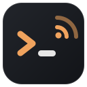
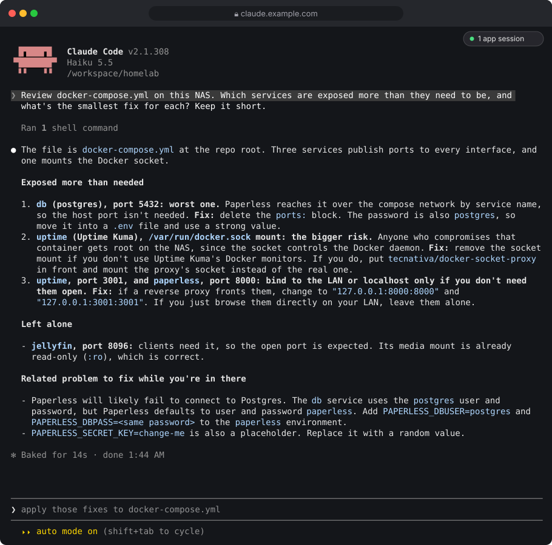
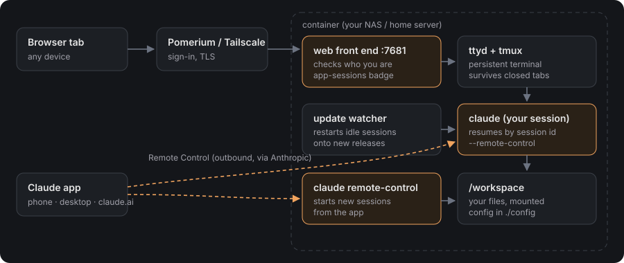
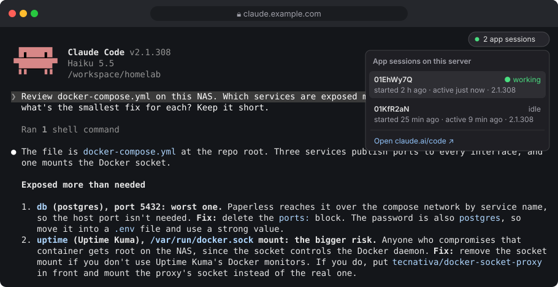

claude-code-webA lightweight container for your NAS or always-on box. It keeps Claude Code running next to your files and containers, opens it in any browser, connects it to the Claude app with Remote Control, and installs updates while you're away.

It depends on where you want Claude Code to live.
The Claude desktop app, or Claude Code in your own terminal, is the better experience on the machine in front of you. You don't need a container for that.
Synology, Unraid, TrueNAS, a Raspberry Pi, a mini PC under the desk: boxes with no screen that hold your files and run your containers. This puts Claude Code there, always on, reachable from a browser or your phone.
Typical jobs: tidy a compose stack, read container logs and fix what's broken, reorganise a media library, review a config before you apply it, keep a long task going while you're on your phone.
No separate web app to learn or sign in to. You get Claude Code's own interface, and the plumbing that makes it pleasant to run on a server.
tmux behind a browser tab. Close the tab, lose Wi-Fi, switch devices: the session keeps running and you reattach where you left off.
Remote Control is on. The terminal session shows up in the Claude app and on claude.ai, and you can start new sessions from your phone.
Restarts, crashes and container rebuilds resume the same conversation by its id, not just the newest one.
Claude Code downloads updates in the background. The container moves idle sessions onto the new release, after checking it actually runs.
Behind Pomerium or Tailscale, the container verifies the signed identity itself on every request, websockets included, against your allowed users.
A small badge shows sessions started from the app, with a dot while one is working and a link to each.
A newer terminal client and tmux settings so copies reach your clipboard, and the long sign-in link is clickable.
A container stop gives Claude time to finish instead of killing it mid-tool-call. A health check reports the terminal's state.
Any UID and GID, so files on your shares keep the right owner. SSH and git work even without a passwd entry.
Your proxy signs you in. The container checks it again, then hands you the terminal. The Claude app talks to the same machine through Remote Control, outbound only, with nothing extra exposed.


Other good projects put Claude Code in a container, and they aim at different things. This one does a single job: Claude Code's own interface on a server, wired into the Claude app.
| claude-code-web | HolyClaude | claudebox | beevelop/docker-claude | |
|---|---|---|---|---|
| What it is | Claude Code on a server, in the browser and the Claude app | All-in-one AI workstation | Isolated dev sandbox with language profiles | Headless Remote Control server |
| Interface | Claude Code's own terminal UI in a browser tab | CloudCLI web app with its own account | Your local terminal | Claude app only |
| Claude app / Remote Control | ✓ Terminal session and new sessions | - | - | ✓ New sessions |
| Always-on service | ✓ | ✓ | - Per project, on demand | ✓ |
| Resumes your conversation | ✓ By session id | - | - | - |
| Applies Claude Code updates | ✓ When idle, after a run check | With image releases | On rebuild | - |
| Built-in access check | ✓ Pomerium assertion or trusted header | Web app login | Local only | - |
| What's inside | Claude Code, ttyd, tmux, git, Node, Python | 8 AI CLIs, Chromium, Playwright, 50+ tools | Profiles per language stack, firewall | Developer toolchain |
From each project's README, October 2026. If you want a full browser workstation with many AI tools, HolyClaude is the richer choice. If you want an isolated sandbox per project on your laptop, use claudebox.
Any machine with Docker Compose. Synology users: create a project in Container Manager with the same compose file.
/login with your Claude account, and accept the folder trust prompt.git clone https://github.com/cmmichael/claude-code-web && cd claude-code-web cp .env.example .env # set PUID, PGID, WORKSPACE_DIR mkdir -p config workspace && sudo chown "$(id -u):$(id -g)" config workspace docker compose up -d # then open http://127.0.0.1:7681
Full instructions, the Synology walk-through, and Pomerium and Tailscale setups are in the README. Remote Control needs a claude.ai subscription; API keys don't work for it.